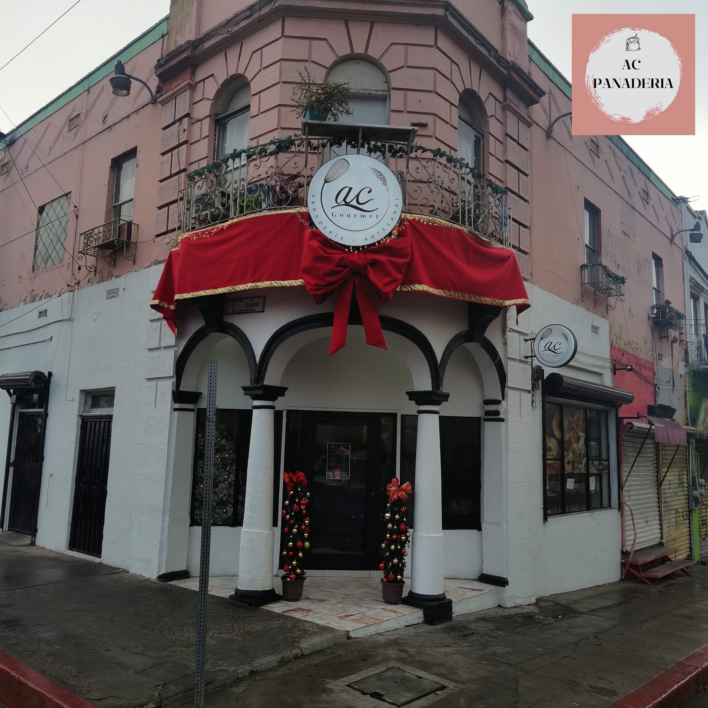

Nosotros

Historia
AC gourmet empezo el 26 de febrero del 2014.
AC gourmet es una empresa dedicada 100% a la panadería artesanal, realzando pan y repostería fina.
Mision
Desde el sabor... AC gourmet es una panaderia, es un taller, es una banquetera, AC gourmet es sabor y sabor.
Vision
Innovar y satisfacer las necesidades de nuestros clientes y consumidores.


© 2023 derechos reservados.
Desarrollado por: Briseida Anahí Barrera Rodríguez Matricula:02009074
Plantel Nueva Tijuana